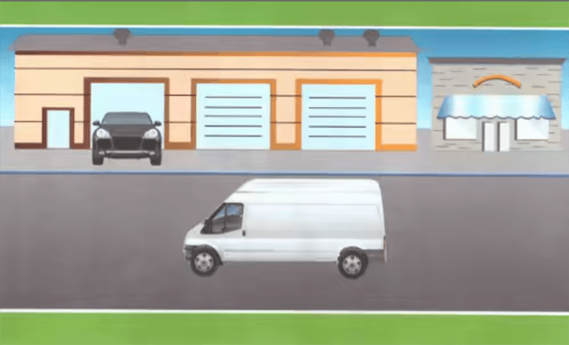
السيارة تخرج من الكراج، يجب التوقف حتى يخوى اليمين واليسار وبعد ذلك يمكن لها الخروج.
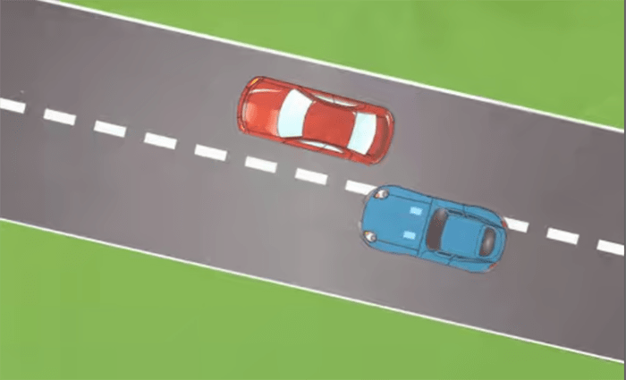
يوجد خط متقطع: مسموح بالتجاوز (السيارة الزرقاء مسموح لها بتجاوز السيارة الحمراء.)
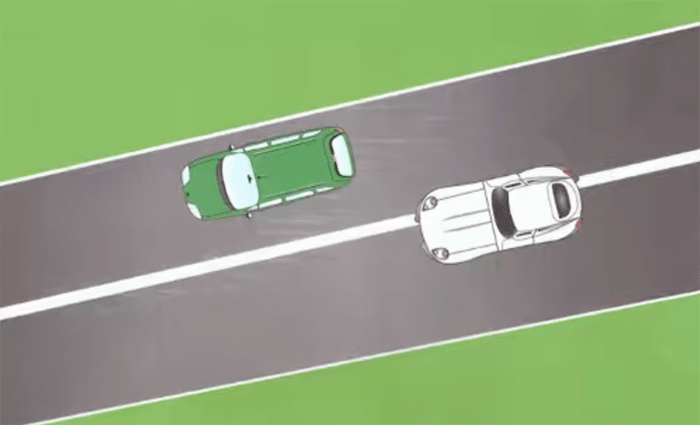
يوجد خط متواصل: ممنوع على السيارة البيضاء تجاوز السيارة الخضراء.
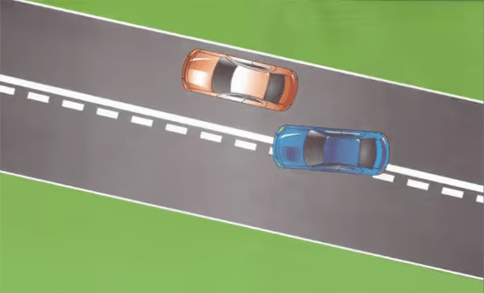
خط متواصل من جهة اليمين: ممنوع على السيارة الزرقاء تجاوز السيارة الحمراء.
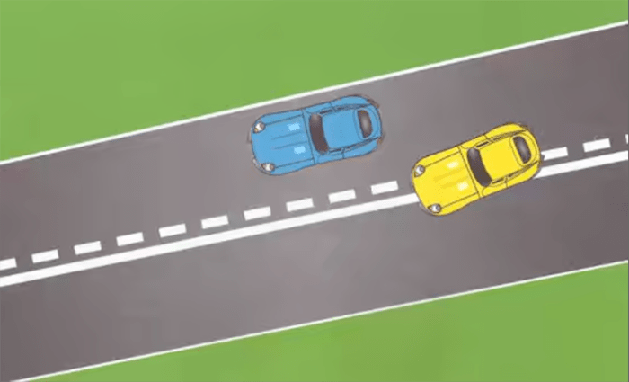
يوجد خط متقطع من الجهة اليمنى: مسموح للسيارة الصفراء تجاوز السيارة الزرقاء.
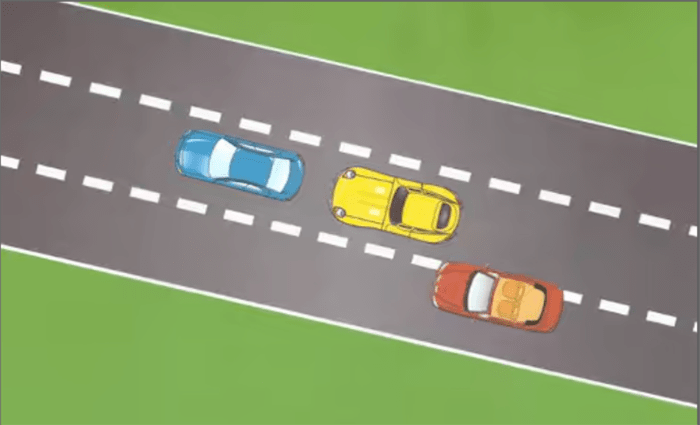
ممنوع على السيارة الحمراء تجاوز سيارتين في نفس اللحظة.
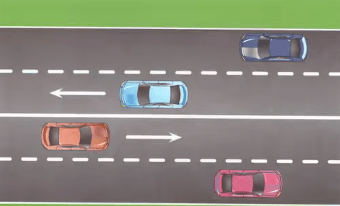
الطريق ذات إتجاهين إثنين، مسموح بالتجاوز.
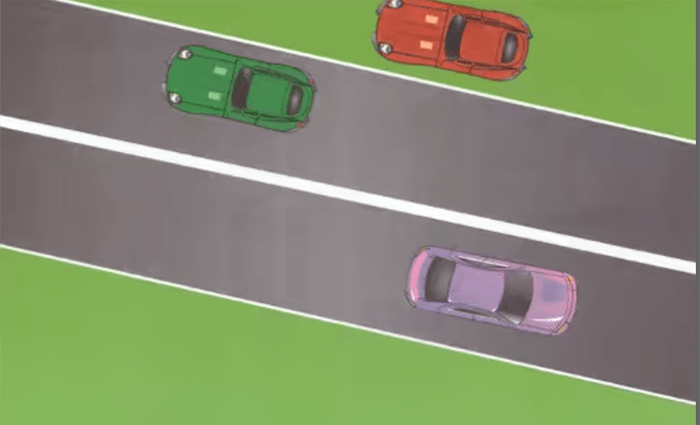
.السيارة الحمراء متوقفة بشكل جيد، لانها خارجة عن لبيست
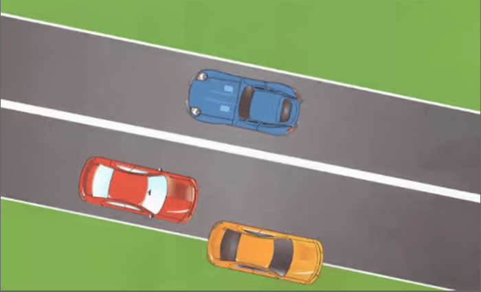
السيارة الصفراء غير متوقفة بشكل جيد، بجب عليها الوقوف خارج لبسيت (خارج الطريق) لانها تعرقل حركة السير.
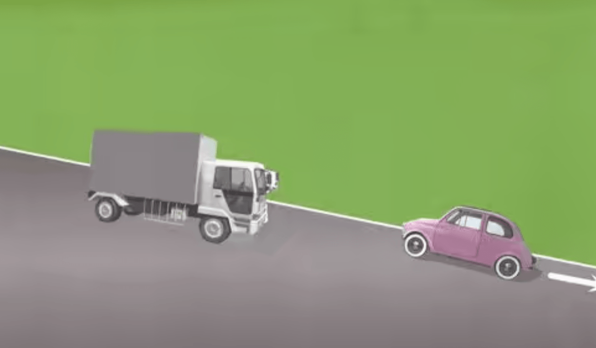
العقبة: بما أن التّراجع سهل بالنسبة للسّيارة الصاعدة، فمن الأفضل لها أن تتراجع.
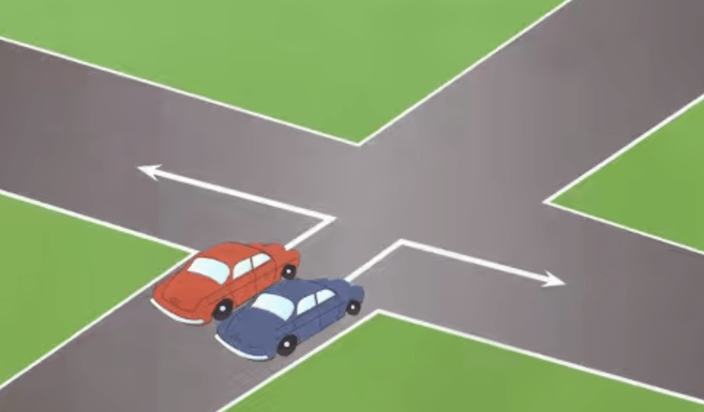
السيارتين منحازتين بشكل جيد، السيارة التي سوف تنعطف إلى اليمين فهي منحازة لليمين، وبالنسبة للسيارة التي تريد الإنعطاف إلى اليسار فهي منحازة لليسار.
السيارتين غير منحازتين بشكل جيد، عكس المثال السابق، السيارة التي تريد الإنعطاف لليمين يجب عليها الإنحياز لليمين وليس لليسار، وبالنسبة للسيارة التي تريد الإنعطاف إلى اليسار فيجب عليها الإنحياز لليسار وليس لليمين.
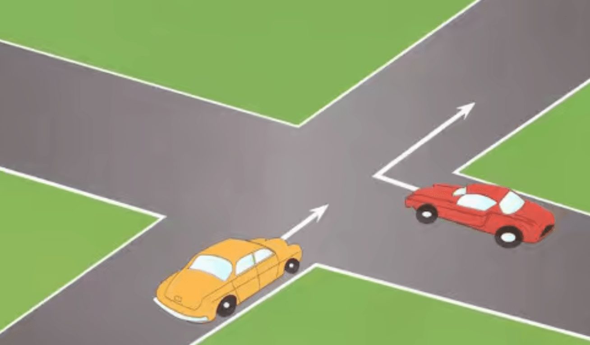
ملتقى الطّرق والأسبقية هنا للسيارة القادمة من اليمين،السيارة الحمراء سوف تمر أولا وبعد ذلك السيارة الصفراء.
نتواجد في ملتقى الطّرق، الشاحنة سوف تقوم بالمرور أولا، لأن السيارة الزرقاء تريد الإنعطاف لليسار، في هذه الحالة سوف تتواجد الشاحنة على يمين السيارة الزرقاء، إذن تقوم الشاحنة بالمرور أولا.
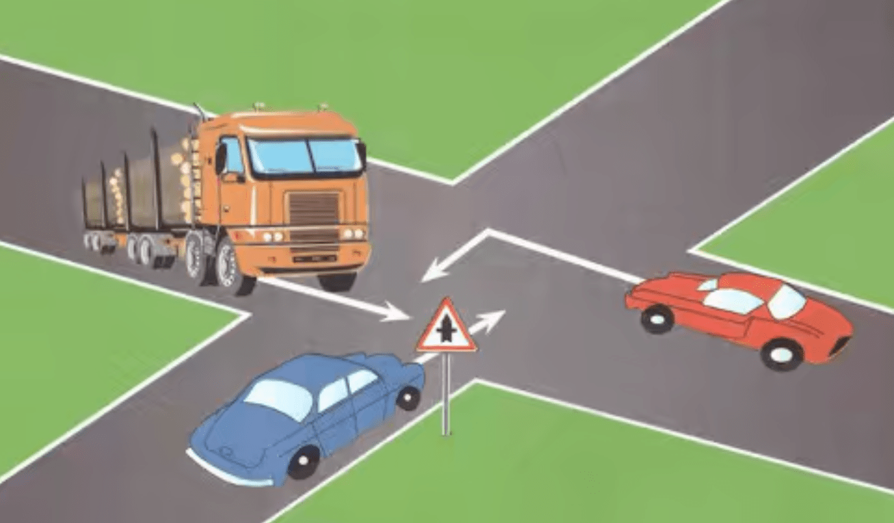
إنتباه، توجد لافتة طرقية للسيارة الزرقاء تعني أنه لديها حق الأسبقية في ملتقى الطّرق، بعد ذلك سوف تمر الشاحنة لأن إتجاهها مباشرة، وبعد ذلك سوف تمر السيارة الحمراء لأنها سوف تنعطف لليسار.،
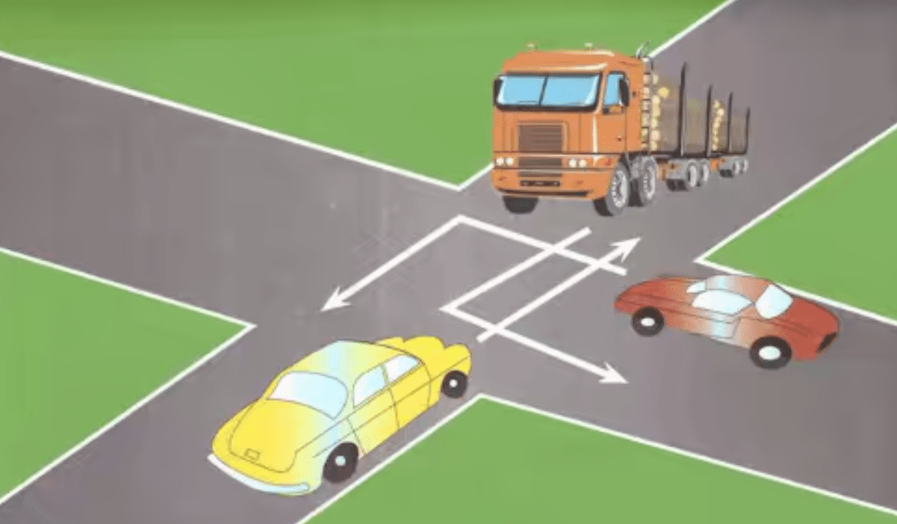
نتواجد في ملتقى طرق بدون لافتات طرقية وفي هذه الحالة الأسبقية للسيارات القادمة من اليمين، في هذه الحالة الشاحنة لا توجد لديها عربات قادمة من الجهة اليمنى إذن سوف تتقدم الشاحنة إلى منتصف الملتقى وتنتظر الشاحنة إلى حين ان تصبح الطريق على يمينها فارغ إذن سوف تمر السيارة الحمراء أولا لأنها تتواجد على يمين السيارة الصفراء، وبعد ذلك السيارة الصفراء وفي الأخير تقوم الشاحنة بالمرور.
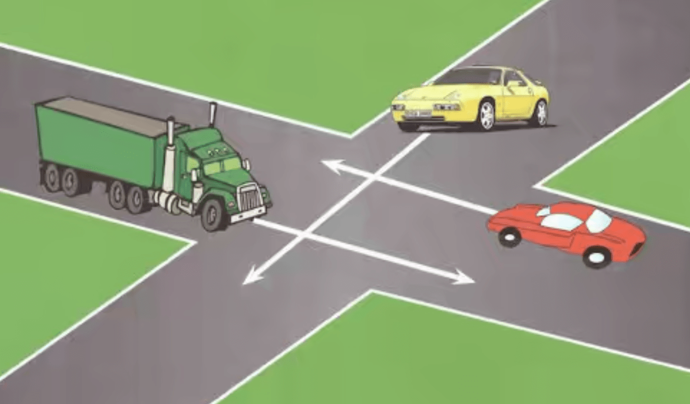
نتواجد في ملتقى طرق، الأسبقية للعربات القادمة من اليمين، سوف تقوم الشاحنة أولا بالمرور لأنه لا توجد عربات قادمة من الجهة اليمنى الخاصة بها، بعد ذلك سوف تقوم السيارة الثفراء بالمرور وأخيرا سوف تقوم السيارة الحمراء بالمرور.
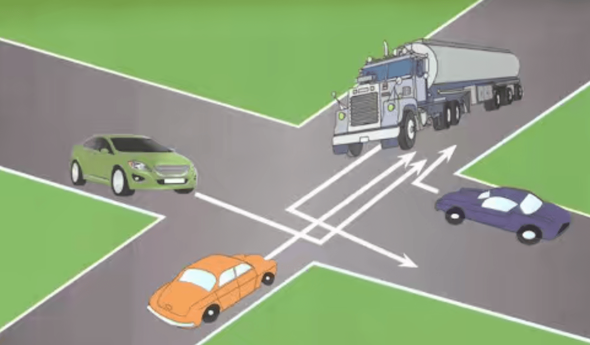
نتواجد في ملتقى الطرق، الأسبقية دائما للعربات القادمة من الجهة اليمنى، في هذه الحالة، سوف تمر السيارة الزرقاء على اليمين أولا، وبعد ذلك السيارة البرتقالية لأنها متّجهة مباشرة، وبعد ذلك السيّارة الخضراء وتقوم بالمرور أخيرا الشاحنة.
ملتقى طرق وتوجد علامة الإنتباه الطريق الصغيرة في الكبيرة مول لكبيرة يدوز أولا، سوف تقوم السيارتين الصفراء والحمراء بالمرور أولا لأنهم يتواجدان في الطريق الرئيسية، وبعد ذلك تقوم السيارة الزرقاء بالمرور.
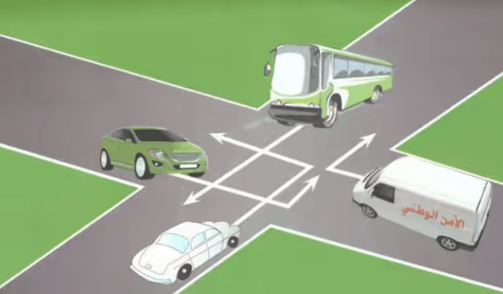
نتواجد في ملتقى الطّرق والأسبقية للعربات القادمة من الجهة اليمنى، سوف تقوم سيارة الأجرة بالمرور أولا لأنها سوف تنعطف على اليمين، وبعد ذلك السيّارة البيضاء سوف تتجه إلى وسط الطريق وتنتظر أن حتى مرور السيّارة الخضراء لكي تمر الحافلة وتقوم السيارة البيضاء بالمرور أخيرا.
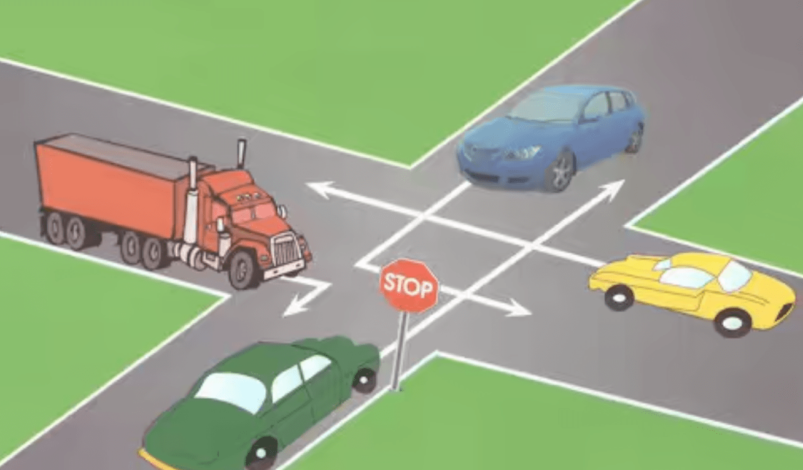
نتواجد في ملتقى طرق مع علامة طرقية قف، سوف تمر الشاحنة أولا، وبعد ذلك السيّارة الزرقاء لأن على يمينها فارغ بعد مرور الشاحنة، وبعد ذلك السيارة الصفراء وفي الأخير السيارة الخضراء لأن لديها إشارة المرور قف.
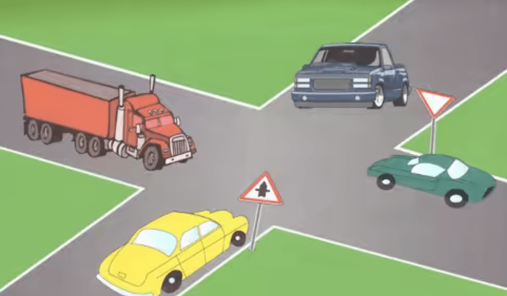
السيارة الصفراء والزرقاء لديهم الأسبقية للمرور أولا لأن لديهم اللافتة الطّرقية التي تشير إلى حق الأسبقية أولا، وبعد ذلك سوف تقوم السيارة والشاحنة بالمرور لأن ليس لديهم حق الأسبقية (لافتة الطريق الصغيرة).
ملتقى الطّرق الأسبقية للعربات القادمة من الجهة اليمنى، في هذه الحالة الأسبقية لسيارة الشرطة، بعد ذلك سوف تقوم السيارة الحمراء بالمرور لأنه لا توجد سيارات على يمينها، بعد ذلك تقوم السيارة الخضراء بالمرور وأخيرا سوف تقوم الشاحنة بالمرور.
في ملتقى الطرق وعندما توجد إشارات ضوئية فيجب إحترام الإشارة الضوئية، إذن سوف تقوم السيارة الزرقاء والشاحنة بالمرور أولا لأن لديهم الضوء أخضر، بعد ذلك سوف تقوم السيارة الحمراء والصفراء بالمرور عندما يشتغل الضوء الأخضر عندهم.
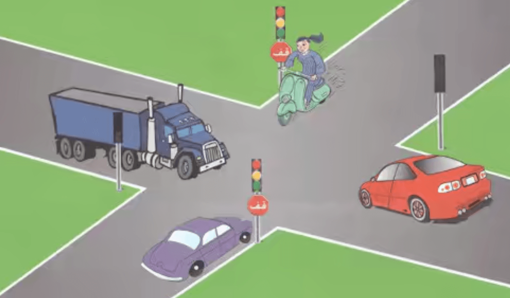
ملتقى الطرق مع علامة قف وإشارات ضوئية، في هذه الحالة إذا كانت الإشارة الضوئية غير شغالة فسوف نطبق علامة قف، لكن إذا كانت الإشارة الضوئية شغالة فعلامة قف تلغى.
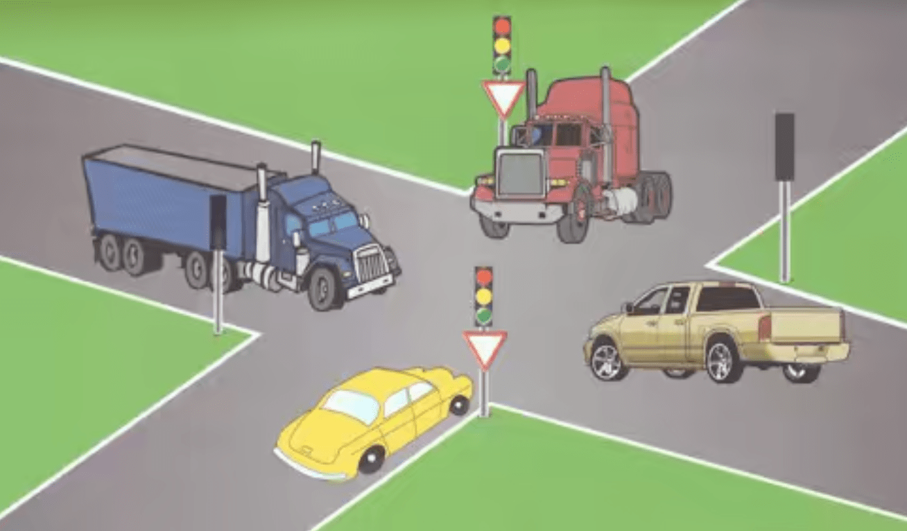
في هذا ملتفى الطّرق يوجد إشارات ضوئية وكذلك علامة طرقية الطريق الصغيرة في الكبيرة، نفس المثال السابق، إذا كانت الإشارة الضوئية شغالة فسوف نلغي اللاّفتة الطّرقية، لكن إذا كانت الإشارة الضّوئية غير شغالة ففي هذه الحالة سوف نطبّق اللاّفتة الطّرقية الطريق الصغيرة في الكبيرة.
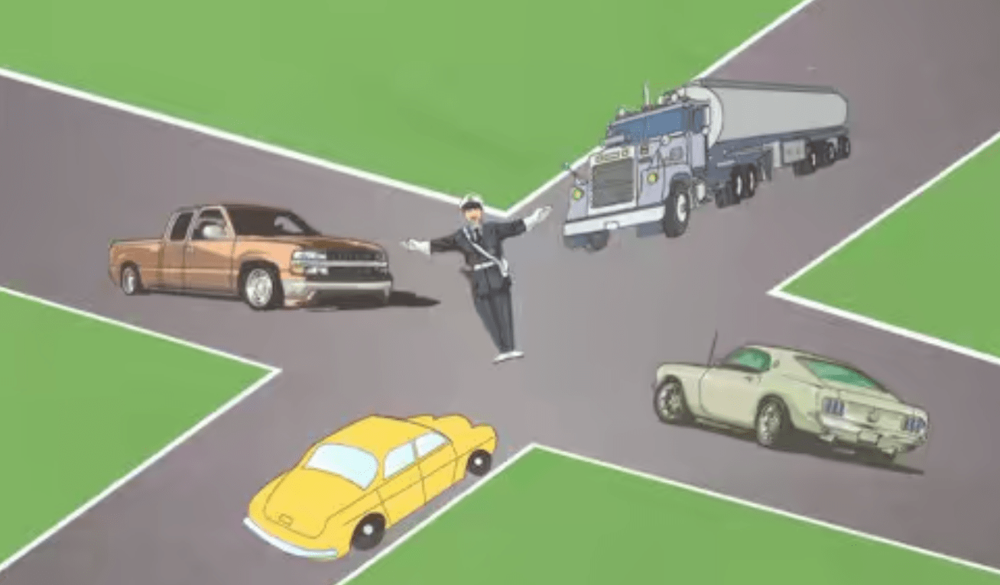
عند وجود شرطي في ملتقى الطرق فنلغي قاعدة الأسبقية لليمين وننتظر إشارة المرور من طرف شرطي المرور، في هذه الحالة السيارة الصفراء والشاحنة سوق يمرّان أولا لأن شرطي المرور سمح لهم بالمرور، وبعد ذلك السيارة الخضراء والحمراء تنتظر إشارة السّماح بالمرور من الشرطي لكي تقومان بالمرور بعد ذلك.
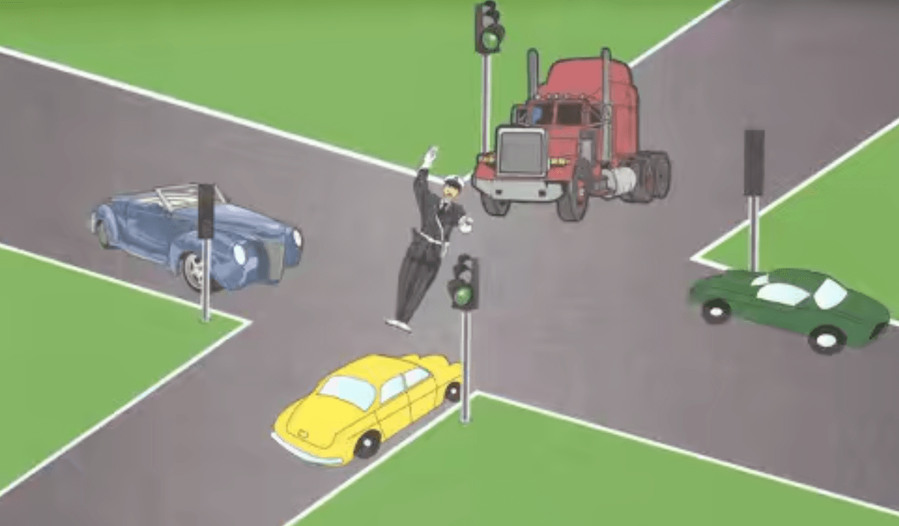
عند وجود شرطي المرور فتلغى جميع الإشارات الطّرقية، في هذه الحالة شرطي المرور يعطي أمر الوقوف للشاحنة والسيارة الصفراء بالرغم من أن لديهم الإشارة الضوئية خضراء، سوف تقوم السيارة الخضراء والسّيارة الزرقاء بالمرور أولا وبعد ذلك تنتظر السيارة الصفراء والشاحنة إشارة المرور من شرطي المرور.
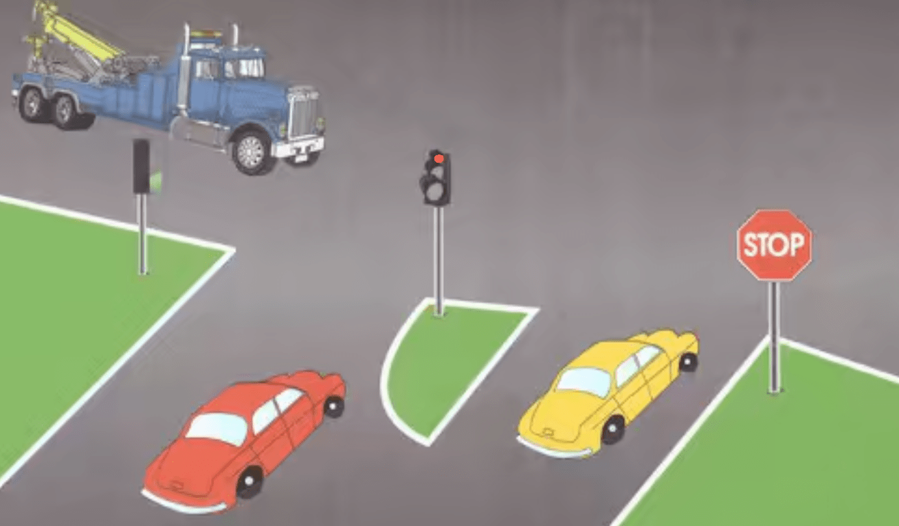
السيارة الصفراء تقف لأن لديها العلامة الطّرقية قف، وكذلك السيارة الحمراء سوف تقف لأن لديها الإشارة الضوئية حمراء، لذلك سوف تقوم الشاحنة بالمرور أولا لأن الإشارة الضوئية لديها خضراء.
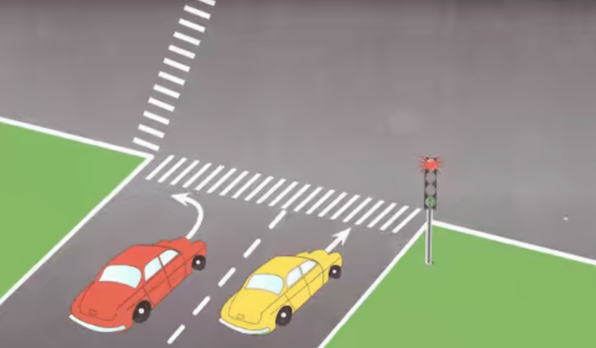
ملتقى الطرق يحتوي على إشارة ضوئية، الإشارة الضوئية تشير إلى أنه ممكن للسيارات المتوجّهة مباشرة المرور، لكن بالنسبة للسيارات التي تريد الإنعطاف يجب عليها الإنتظار إلى حين إشتغال الضوء الأخضر.
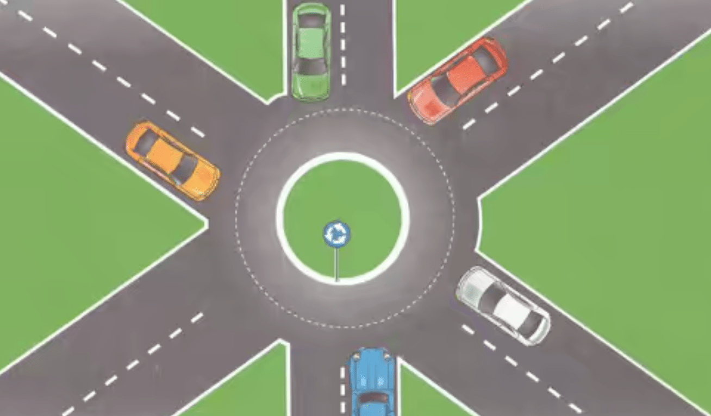
إتجاه مداري (رومبوان) مع إشارة تشير إلى الأسبقية للسيارات القادمة من اليمين، سوف تقوم السيارة الصفراء بالمرور أولا لأنه لا توجد عربات على يمينها، وبعد ذلك السيارة الخضراء وبعد ذلك السيارة الحمراء ثم البيضاء وفي الأخير السيّارة الزرقاء.
إتجاه مداري (رومبوان) مع علامة قف، سوف تقوم السيارة الصفراء والبيضاء بالمرور لأنه لا توجد لديهم علامة قف، وبعد ذلك السيارة الخضراء وفي الأخير السيارة الزرقاء والشاحنة لأن لديهم علامة قف.
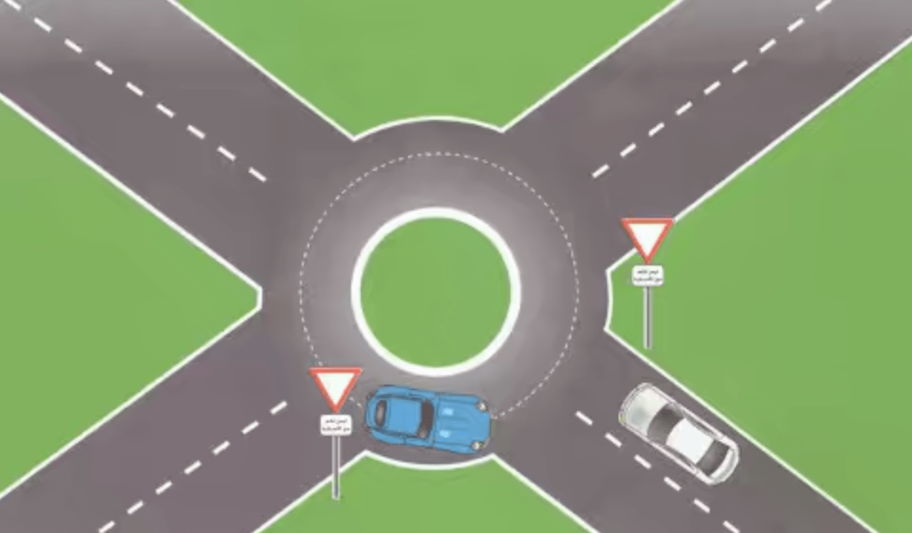
إنتباه رومبوان مع علامة طرقية ليس لكم حق الأسبقية، الأسبقية في هذه الحالة للسيارة المتواجدة في الرومبوان أولا، إذن سوف تمر السيارة الزرقاء أولا وبعد ذلك السيارة البيضاء.
الأسبقية للرّاجلين لأنهم إندمجوا في ممر الرّاجلين يجب على السيارة الزرقاء إنتظار مرورهم وبعد ذلك تقوم بالمرور لأن لديها الإشارة الضوئية خضراء، ثم بعد ذلك السيارة الحمراء تقوم بالمرور عندما تصبح الإشارة الضوئية الخاصة بها خضراء.
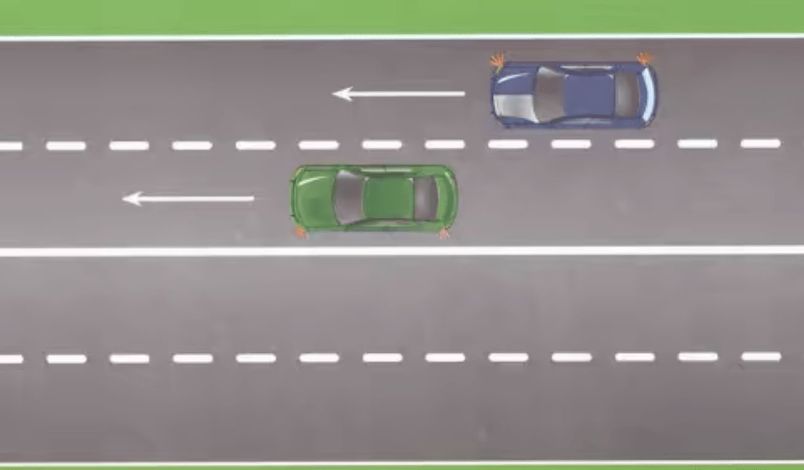
السيارة الخضراء سوف تقوم بالإنعطاف لليسار، في هذه الحالة مسموح للسيارة الزرقاء بتجاوز السيارة الخضراء من الجهة اليمنى.
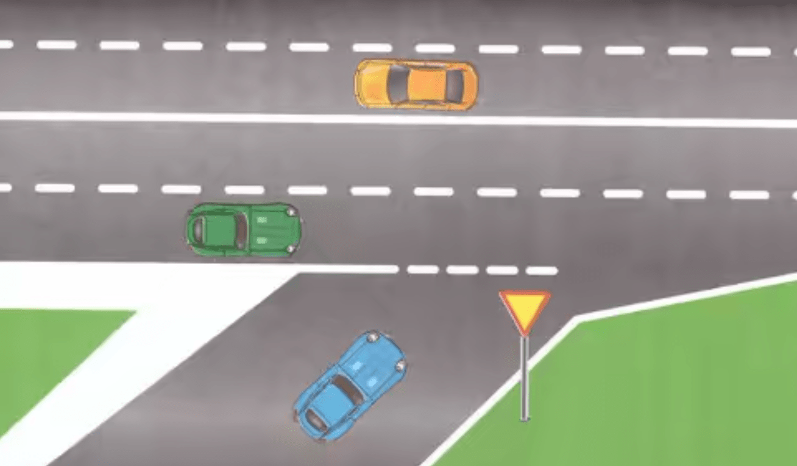
اللافتة الطّرقية تشير إلى طريق صغيرة في لكبيرة، في هذه الحالة يحب على السيارة الزرقاء الإنتباه والتخفيف من السرعة وإنتظار السيارة الخضراء أن تقوم بالمرور أولا وبعد ذلك، عندما تصبح الطريق فارغة يمكن للسيارة الزرقاء الإندماج في حركة السير.
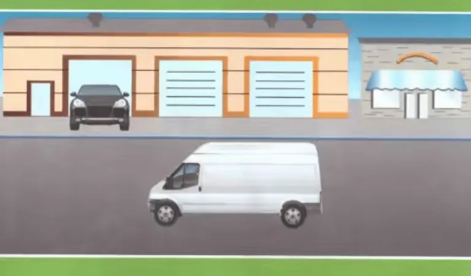
السيارة خارجة من الكراج، يعني خاصها توقف حتى يخوى ليمن وليسر ديالها عاد تقدر تندمج فالطريق الرئيسي.
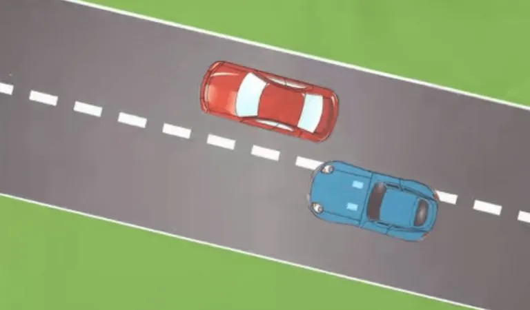
خط متقطع، يعني أنه مسموح للسيارة الزرقاء تجاوز السيارة الحمراء.
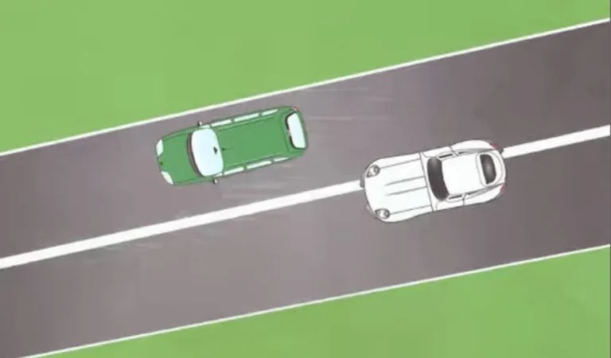
خط متصل كيمنع التجاوز، يعني السيارة البيضاء ممنوع عليها تجاوز السيارة الخضراء.
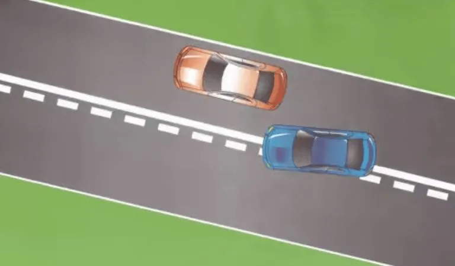
خط متصل من الجهة اليمنى و خط متقطع من الجهة اليسرى، بما ان السيارة الزرقاء كتتواجد فالجهة اليمنى فممنوع عليها تجاوز السيارة الحمراء.
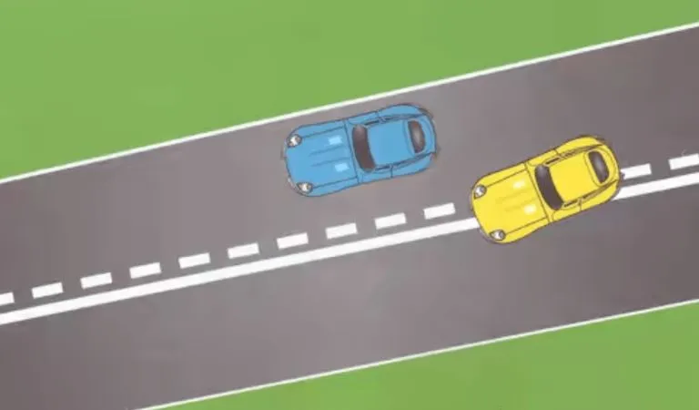
خط متقطع من الجهة اليمنى و خط متصل من الجهة اليسرى، بما أن السيارة الصفراء كتتواجد فالجهة اليمنى فمسموح ليها تجاوز السيارة الزرقاء.
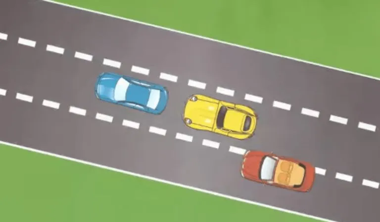
بصفة عامة ممنوع التجاوز ديال أكثر من عربة فوقت واحد، بإستثناء الطريق لي فاتجاه واحد، بحال الطريق السيار مثلا مسموح التجاوز ديال أكثر من عربة فوقت واحد.
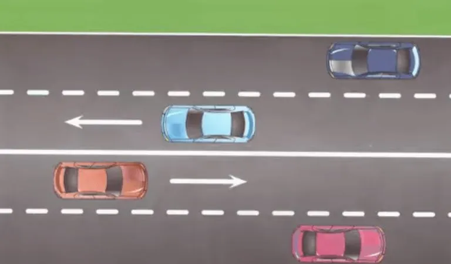
الطريق ذو اتجاهين، والعربتين الحمراء و الزرقاء كيستعملو المسلك الثاني للتجاوز، ماكاين حتا مشكل.
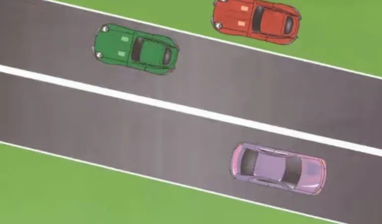
السيارة الحمراء واقفة مزيان حيث خارجة من الطريق.
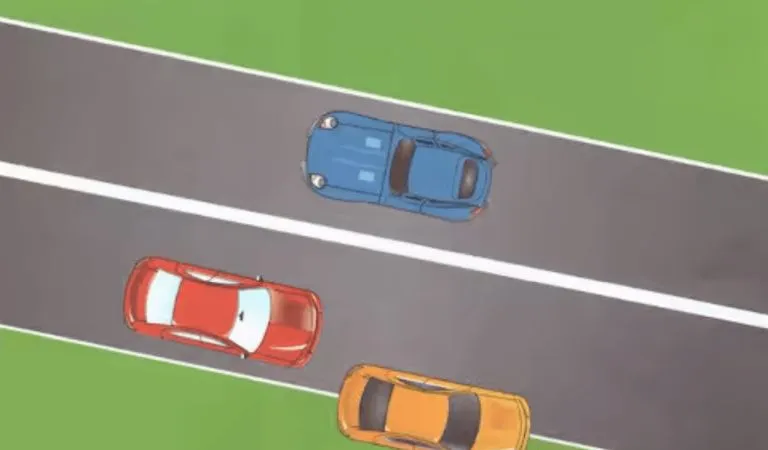
السيارة الصفراء ماواقفاش مزيان، خاصها تخرج من الطريق بشكل كامل باش ماتعرقلش حركة السير.
هنا كاينة عقبة، بما أن التراجع او الوقوف كيكون اسهل على العربة لي طالعة فمن الأفضل تعطي الطريق.
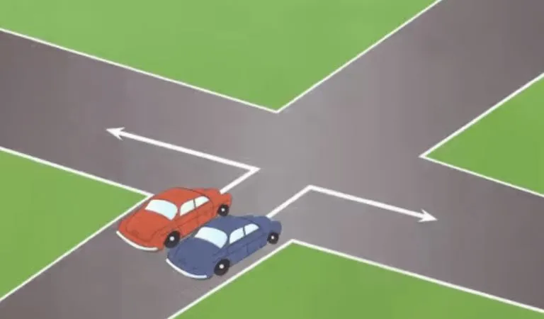
السيارات بجوج فالمسلك المناسب ديالهوم، اللي غادي تدور على اليمين شادة اليمين وللي غادي تدور على اليسار شادة اليسار.
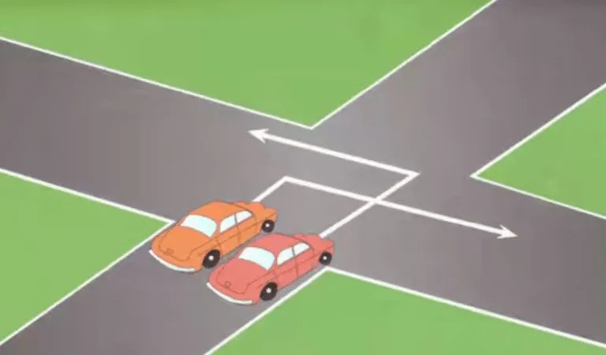
السيارات فبجوج في المسلك الغير مناسب، خاص للي غادي يدور على اليمين يشد اليمين واللي غادي يدور على اليسار يشد اليسار.
هنا كاين ملتقى طرق، بما ان السيارة الحمراء كتتواجد على اليمين ديال السيارة الصفراء، خاصها تدوز هي اللولة.
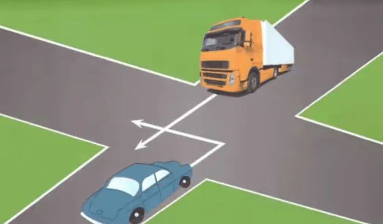
هنا كاين ملتقى طرق، الى دارت السيارة الزرقاء هي اللولة غادي تولي الشاحنة على اليمين ديالها، و حنا عارفين فملتقى الطرق الأسبقية لليمين، يعني خاص الشاحنة تدوز هي اللولة.
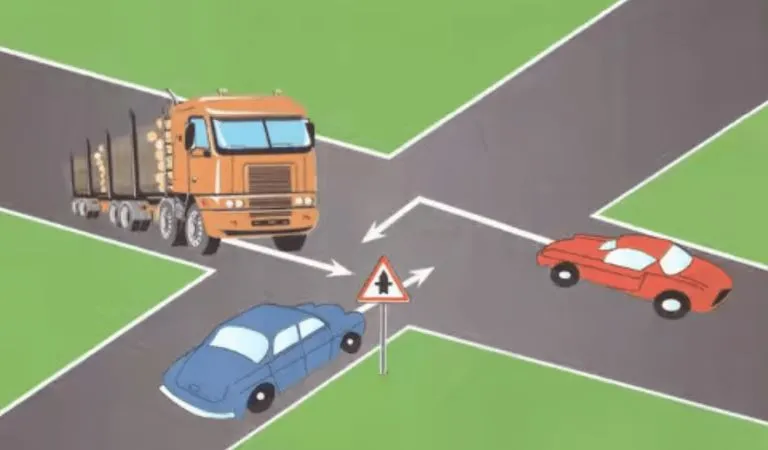
هنا كاين علامة حق الأسبقية، يعني السيارة الزرقاء هي للي فالطريق الكبيرة و خاصها تدوز هي اللولة. كتبقى الشاحنة و السيارة الحمراء، بما انه ماعندهومش حتا علامة فكنطبقو قاعدة الأسبقية لليمين، بما أنه السيارة الحمراء الا دازت غادي تبقى الشاحنة على اليمين ديالها يعني خاص تدوز الشاحنة هي اللولة، عاد السيارة الحمراء.
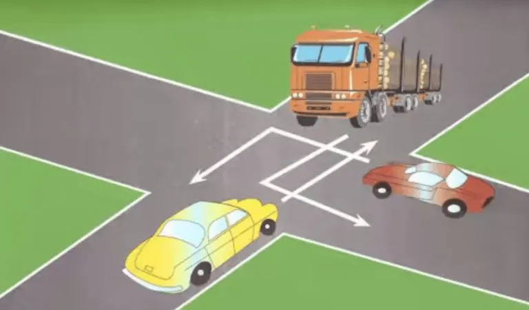
هنا ملتقى الطرق مافيه حتا علامة، يعني كنطبقو قاعدة الأسبقية لليمين، الشاحنة خاوي اليمين ديالها يعني خاصو يتقدم حتا يعمر وسط الطريق ويوقف، هنا كيولي اليمين ديال السيارة الحمراء خاوي يعني كتدوز، و كتبعها السيارة الصفراء حيت غادي يخوا اليمين ديالها فاش غادي تدوز السيارة الحمراء، و أخيرا كتدوز الشاحنة.
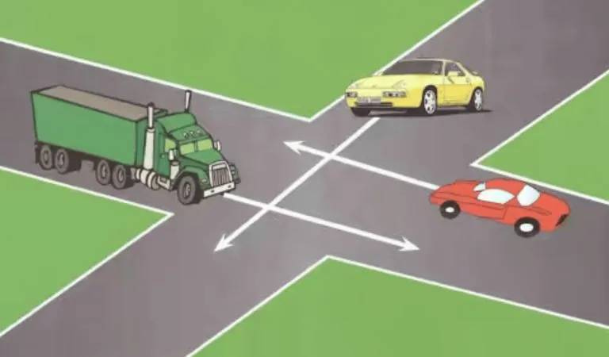
هنا ملتقى الطرق مافيه حتا علامة، يعني كنطبقو قاعدة الأسبقية لليمين، تدوز الشاحنة بما ان اليمن ديالها خاوي، تبعو السيارة الصفراء ثم أخيرا السيارة الحمراء.
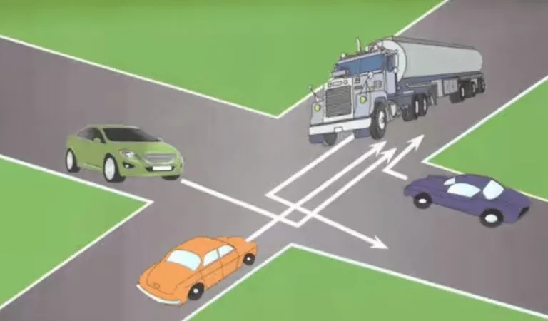
هنا ملتقى الطرق مافيه حتا علامة، يعني كنطبقو قاعدة الأسبقية لليمين، تدوز السيارة الزرقاء على اليمين، تبعها السيارة البرتقالية، ثم السيارة الخضراء، و أخيرا تدوز الشاحنة.
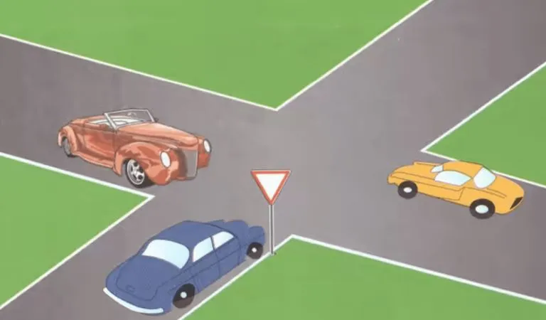
هنا كاين علامة إعطاء حق الأسبقية، تدوز السيارة الصفراء والحمراء اللي فالطريق الرئيسية عاد السيارة الزرقاء للي فالطريق الثانوية.
هنا ملتقى الطرق، يعني كنطبقو قاعدة الأسبقية لليمين، ولكن بم انه كاينة عربة ديال الشرطة فالأسبقية ليها، ثم السيارة البيضاء غادي يخوا اليمين دياله، فغادي تعمر وسط الطريق وتوقف، كيخوى ليمن ديال السيارة الخضراء كتدوز و كتبعها الحافلة، ثم اخيرا السيارة البيضاء كتكمل طريقها.
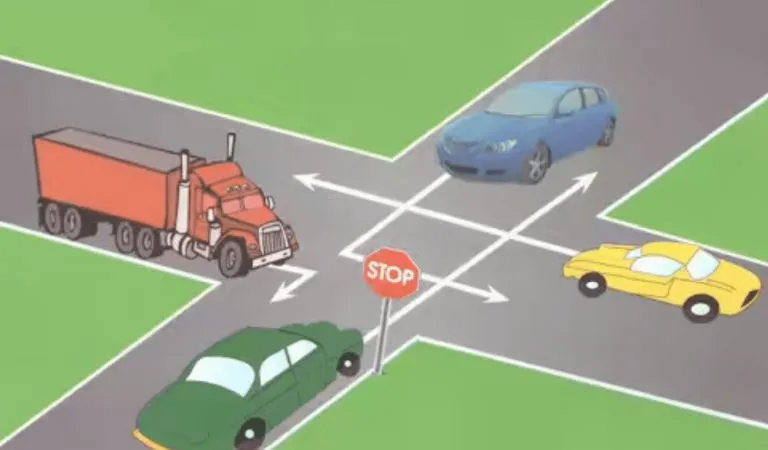
هنا كاين علامة قف عند السيارة الخضراء، تدوز الشاحنة لأن ليمن ديالو فيه علامة قف، تبعو السيارة الزرقاء لأن ليمن ديالها غادي يخوى، اتدوز السيارة الصفراء ثم أخيرا السيارة الخضراء.
هنا ملتقى الطرق فيه علامة حق الأسبقية عند السيارة الصفراء و علامة إعطاء حق الأسبقية عند لسيارة الخضراء، يعني السيارة الصفراء والزرقاء يدوزوا لأنهم في الطريق الكبيرة، عاد تدوز السيارة الخضراء والشاحنة.
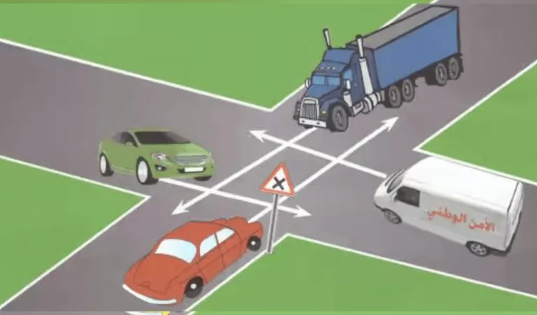
هنا ملتقى الطرق فيه علامة الخطر فقط، كنطبقو قاعدة الأسبقية لليمين، ولكن بما أنه كاين عربة ديال الشرطة دوز هي اللولة، يخوى اليمين ديال السيارة الحمراء تدوز، وتبعها السيارة الخضراء، ثم أخيرا الشاحنة.
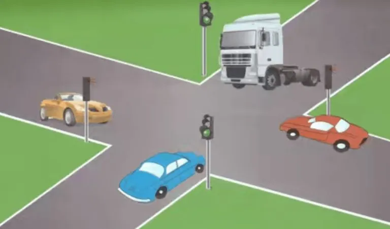
هنا ملتقى الطرق مع التشوير الضوئي، الشاحنة والسيارة الزرقاء يدوزوا عندهم الضوء أخضر، السيارة الصفراء والحمراء يوقفو عندهم الضوء أحمر.
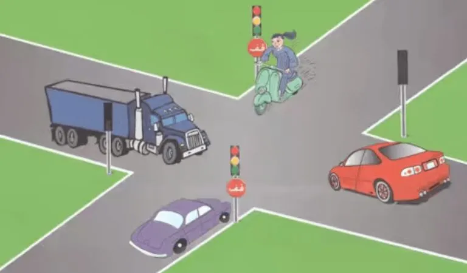
هنا ملتقى الطرق مع التشوير الضوئي و علامة قف، الى كان الضوء مخدامش علامة قف كتحكم، كان الضوء خدام علامة قف كتلغى.
هنا ملتقى الطرق مع التشوير الضوئي و علامة إعطاء حق الأسبقية، اذا كان الضوء مخدامش العلامة كتحكم اذا كان الضوء خدام العلامة كتلغى.
هنا ملتقى الطرق مع وجود شرطي المرور، تدوز السيارة الصفراء والشاحنة بما ان عطاهم الشرطي اشارة المرور (عاطيهم بالجنب) والسيارة الخضراء والحمراء يتسناو اشارة الشرطي.
هنا ملتقى الطرق مع التشوير الضوئي و شرطي المرور، الشاحنة والسيارة الصفراء يوقفو واخا عندهم الضوء أخضر، لأن الأضواء كتلغى فحضور الشرطي، والسيارة الزرقاء والخضراء يدوزو لأن الشرطي عاطيهم بالجنب.
السيارة الصفراء عندها قف توقف يدوز الكاميو عندو الضوء أخضر والسيارة الحمراء توقف عندها الضوء أحمر.
هنا ملتقى الطرق مع التشوير الضوئي، السيارة الصفراء تتبع السهم للأمام لأن عندها الضوء أخضر كيشير انه لي غادي يتابعو السير للأمام مسموح يدوزو، السيارة الحمراء توقف عندها الضوء أحمر.
عنا عندنا مدار، تدوز السيارة الصفراء خاوي ليمن ديالها يخوى ليمن السيارة الخضراء تدوز ثم السيارة الحمراء ثم البيضاء عاد السيارة الزرقاء هي الأخيرة.
علامة قف و مدار، السيارة البيضاء والصفراء يدوزوا لأن اليمين ديالهم فيه قف، اتبعهم السيارة الخضراء عاد السيارة الزرقاء ثم الشاحنة.
مدار مع علامة إعطاء حق الاسبقية، الاسبقة للي دخل للمدار الأول، تدوز السيارة الزرقاء عاد تدوز السيارة البيضاء.
الأسبقية للراجلين، يدوزو الناس للي في الطريق عاد تكمل السيارة الزرقاء واخا عندها الضوء أخضر، السيارة الحمراء توقف عندها الضوء أحمر.
مسموح التجاوز على اليمين للسيارة الزرقاء اذا كانت السيارة الخضراء كتعلن على تغيير الاتجاه الى الجهة اليسرى (أضواء تغيير الإتجاه).
إعطاء حق الأسبقية فى الدخلة ديال الطريق السيار، السيارة الزرقاء تنقص من السرعة وتشد ليمن ديالها وتعطي الأسبقية للسيارة الخضراء عاد تدوز.